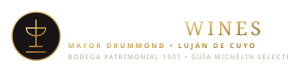

El Templo del Jamón Crudo
en la República Argentina
"En las Sierras Chicas de Córdoba, Don Víctor Fernández inició una alquimia que hoy, en su tercera generación, es reverenciada unánimemente por los más grandes chefs y críticos del continente."

Un Ícono Gastronómico Argentino
Reconocido por referentes de la cocina argentina como el estándar supremo del prosciutto sudamericano. El Búho no es simplemente un producto: es un legado cultural.
La Sinergia Perfecta:
Sierras Chicas & Gran Terroir Cuyano
El encuentro predestinado entre el rey del jamón crudo y la capital enológica y gastronómica de Sudamérica.
Público y Enoturismo Global
Mendoza recibe a miles de turistas nacionales e internacionales exigentes en busca de experiencias sublimes de maridaje. Ningún producto marida con tanta nobleza con el vino argentino como un auténtico jamón crudo de guarda.
Mysterik Producciones
El brazo articulador en territorio cuyano. Conduce la estrategia de marketing experiencial, posicionamiento de marca, relaciones públicas con bodegas y chefs consagrados, y la gestión de la red regional.
Pilares de Aterrizaje
- Charlas & Capacitaciones de Corte
- Modelo Concesión ("Que Cada Jamón Valga")
- Puntos de Venta (Torrent)
- Maridajes en Bodega (Martino Wines)

Charlas Magistrales &
Capacitaciones de Élite
El jamón no se vende: se cuenta, se rinde homenaje y se corta con maestría técnica frente al cliente.
 Módulo Práctico
Módulo Práctico
Maestría de Corte a Cuchillo
Instrucción para personal de sala y cocineros. Posicionamiento en jamonera, uso correcto del cuchillo jamonero flexible, limpieza de la corteza, grosor traslúcido de la loncha y seguridad.
- Aprovechamiento del 100% de la pieza
- Espectáculo visual en vivo en el salón
 Módulo Enológico
Módulo Enológico
Cata Sensorial & Maridaje
Análisis organoléptico comparativo. Armonización con los vinos de Mendoza: espumantes método tradicional, blancos de crianza, Cabernet Franc y las etiquetas de autor de Martino Wines.
- Equilibrio de grasas, salinidad y acidez
- Activaciones sunset en bodegas selectas
 Módulo Negocio
Módulo Negocio
Storytelling & Elevación de Ticket
Entrenamiento al personal de servicio sobre cómo transmitir la historia de Agua de Oro al comensal. Venta sugestiva que eleva el consumo promedio del restaurante o wine bar hasta un 35%.
- Argumentario de venta para mozos y sommeliers
- Fidelización del cliente corporativo y gourmet
Alianzas de Prestigio en Mendoza
El aval de dos instituciones emblemáticas de la gastronomía y la vitivinicultura de Cuyo.
Firma Torrent
El templo indiscutido de los quesos, fiambres de autor y delicatessen en Mendoza con más de un siglo de trayectoria intachable.

Bodega Martino Wines
Bodega patrimonial fundada en 1901 en Mayor Drummond (Luján de Cuyo) con viñedos centenarios en Agrelo y Barrancas.